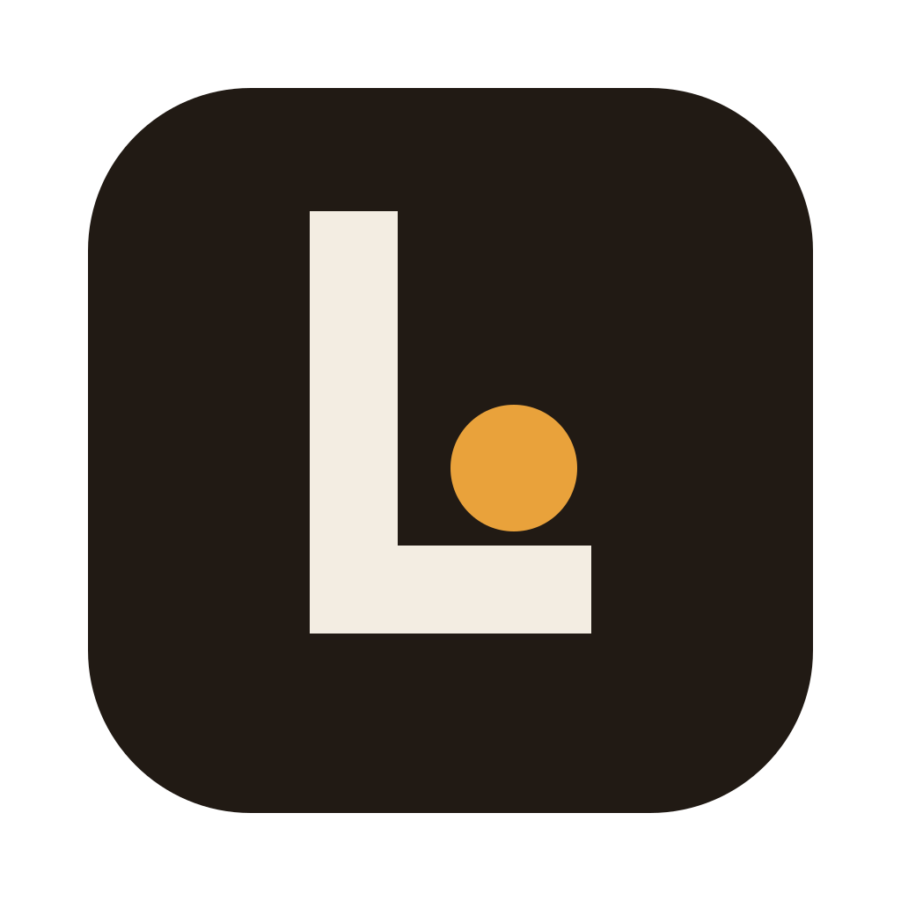

Lamplight を起動しています
初回のみ、会話を保存するデータベース MongoDB Community Server を MongoDB 公式サイトからダウンロードします（約 80 MB）。
MongoDB は Server Side Public License (SSPL) で提供されています。Lamplight はこの Mac の中だけで MongoDB を使い、外部には公開しません。
- MongoDB をダウンロード
- データベースを起動
- 拡張機能を起動
- ローカルアカウントを作成
- Lamplight サーバーを起動
- サインイン
ローカル LLM を使うには Ollama が必要です。ollama.com からインストールして起動すると、モデル一覧に表示されます。